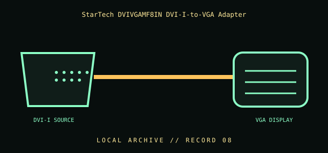

[ INDIVIDUAL COMPONENT // CABLES & ADAPTERS ]
StarTech DVIVGAMF8IN DVI-I-to-VGA Adapter
A passive adapter that brings analog VGA-compatible RGB signals from a DVI-I source to a VGA display cable. It does not convert a digital-only DVI-D signal into analog VGA.

IDENTIFICATION / SAFETY: Match the complete part number, connector direction, host requirements, and revision to manufacturer documentation. A matching connector shape is not proof of protocol or electrical compatibility.
Specifications
| Catalog subcategory | Display cables and adapters |
|---|---|
| Catalog identity | StarTech.com DVIVGAMF8IN DVI-I male to VGA female adapter |
| Protocol / standard | StarTech model DVIVGAMF8IN; DVI-I source-side plug to VGA female receptacle; analog video path. The manufacturer describes use from a DVI-I source to a VGA display. |
| Connector ends | DVI-I SOURCE → VGA DISPLAY; direction and gender are specified where the manufacturer source verifies them. |
Compatibility & electrical hazards
The graphics output must provide analog DVI-I signals (or an explicitly compatible DVI-A output). A DVI-D-only port has no analog VGA signal to pass through. This passive adapter is not an active digital-to-analog converter; check the source connector and display mode before connection.
Archival & handling notes
Record the source port type and adapter orientation. Inspect DVI contacts, especially analog pins, and avoid bending the adapter by allowing a heavy VGA cable to cantilever from it.
For collection records, photograph both connector faces and all labels; record manufacturer, complete SKU, revision, provenance, condition, and the source document used for identification. Do not apply power to an unidentified or damaged cable.
Sources & further reading
- StarTech — DVIVGAMF8IN DVI-I to VGA adapterManufacturer confirms analog VGA display use with a DVI-I source.
- VESA — DisplayPort and display interface resourcesStandards organization reference; consult the DVI-I source/display documentation for analog compatibility.
Source values are limited to the linked manufacturer or standards documentation. Features not stated there are intentionally left unspecified; confirm the exact cable revision and host-device manuals before use.